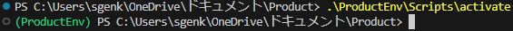
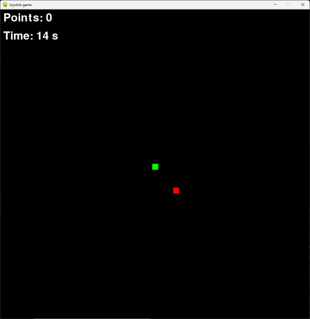

このサイトはRabyの作った自己満サイトです
このサイトから学べることは少ないと思います。しかし、新しい発見の手助けと なればと思います。新しい視点を得たり、興味を持つテーマを見つけたりするこ とができるでしょう。是非、お楽しみいただければ幸いです。
また、このようなことをやってほしいという要望があれば、ぜひお知らせくださ い。私たちは皆さまのご意見を大切にし、より良いサービスを提供できるよう努 めております。どんな小さなことでも構いませんので、皆さまのアイデアをお待 ちしております。

今回は、Arduinoでジャイロスティックから送られてくる信号をPythonに送り、読み取った信号で操作できるゲームの作成を
しましょう。むかつくゲームとなっているので完成したものプログラムでイライラしないよう気を付けてください。
それでは、やっていきましょう
はじめにPython仮想環境を作成しましょう。Pythonの仮想環境は,powershellやコマンドプロンプトで 「python -m venv [仮想環境名]」のように記述して実行すことで作成することができます。 私は以下のように書きます。
python -m venv ProductEnv
次に仮想環境を起動させて仮想環境内に必要なライブラリのインストールを行います。 コマンドプロンプト上で「.\[仮想環境名]\Scripts\activate」 と打つことで実行できます。
.\ProductEnv\Scripts\activate
※ . は作成した仮想環境へのパスを表しており、今回はプロジェクト直下に venv環境があることを想定しています。コマンドを実行している場所にvenv 環境がない場合は . の部分のパス適宜書き換えてください。
仮想環境を起動させることができたらPythonライブラリーの「pygame」 と「pyserial」をインストールしましょう。Pythonのライブラリーを インストールする際には「pip install [ライブラリー名]」と記述することで 実行することができます。実際に以下のコードパワーシェルに記述して実行してみましょう。
pip install pygame
pip install pyserial
pygame：ゲームライブラリ
serial：Arduinoとのシリアル通信を行うためのライブラリ
time：時間操作のための標準ライブラリ
random：ランダム数生成のための標準ライブラリ
pygame.init()：Pygameライブラリの初期化を行います。
import pygame
import serial
import time
import random
pygame.init()
ser = serial.Serial('COM3', 9600)：COM3ポートで9600ポーレートでシリアル通信を設定します。
time.sleep(2)：Arduinoとの通信を確率させるために2秒待機します
screen = pygame.display.set_mode((1024, 1024))：1024×1024ピクセルのPygameウィンドウを作成
pygame.display.set_caption('Arduino to Pygame')：ウィンドウタイトルを設定します。
font = pygame.font.SysFont(None, 55)：フォント設定を行う
ser = serial.Serial('COM3', 9600)
time.sleep(2)
screen = pygame.display.set_mode((1024, 1024))
pygame.display.set_caption('Joystick game')
font = pygame.font.SysFont(None, 55)
WHITE、BLACK、
GREEN、RED：色の定義
player_size：プレイヤーの大きさを指定する
player_pos：障害物の初期位置を設定します。
random.randintでランダムなX位置を設定します。
obstacle_speed：障害物の移動速度を設定します
point：ポイント（スコア）を初期化します
collision_time：衝突が発生した時刻を初期化する
start_time：ゲームの開始時刻を取得します。
WHITE = (255, 255, 255)
BLACK = (0, 0, 0)
GREEN = (0, 255, 0)
RED = (255, 0, 0)
player_size = 20
player_pos = [512, 512]
obstacle_size = 20
obstacle_pos = [random.randint(0, 1024-obstacle_size), 0]
obstacle_speed = 10
point = 0
collision_time = 0
start_time = pygame.time.get_ticks()
running = True：ゲームループのフラグを設定します
clock = pygame.time.Clock()：ゲームのフレームレートを管理します
while running:
for event in pygame.event.get():
if event.type == pygame.QUIT:
running = False
ser.in_waiting：受信バッファにデータがあるかを確認します。
data = ser.readline().decode('ISO-8859-1').strip()：シリアルデータを読み取り、デコードして整形します。
データが存在する場合、x, y = map(int, data.split(','))でX軸とY軸の値を取得し、player_posに設定します。
if ser.in_waiting > 0:
data = ser.readline().decode('ISO-8859-1').strip()
if data:
try:
x, y = map(int, data.split(','))
player_pos = [x - player_size // 2, y - player_size // 2]
except ValueError:
continue
print(f"{x}, {y}")
障害物が画面の下端に達した場合、再び画面上端に配置します
obstacle_pos[1] += obstacle_speed
if obstacle_pos[1] > 1024:
obstacle_pos = [random.randint(0, 1024-obstacle_size), 0]
プレイヤーと障害物の位置をチェックし、衝突があった場合にポイントを更新します。
current_time = pygame.time.get_ticks()
if (obstacle_pos[0] < player_pos[0] < obstacle_pos[0] + obstacle_size or
obstacle_pos[0] < player_pos[0] + player_size < obstacle_pos[0] + obstacle_size) and (
obstacle_pos[1] < player_pos[1] < obstacle_pos[1] + obstacle_size or
obstacle_pos[1] < player_pos[1] + player_size < obstacle_pos[1] + obstacle_size):
if current_time - collision_time > 1000:
point += 1
collision_time = current_time
ページに GUI コンポーネントを追加しています。
ポイントが10に達した場合、ゲームを終了します
if point == 10:
elapsed_time = (pygame.time.get_ticks() - start_time) // 1000
running = False
画面を黒でクリアし、プレイヤーと障害物を描画します
現在のスコアと経過時間を表示します
画面を更新し、毎秒60フレームの速度でループを実行します。
screen.fill(BLACK)
pygame.draw.rect(screen, GREEN, (player_pos[0], player_pos[1], player_size, player_size)) # キャラクターを描画
pygame.draw.rect(screen, RED, (obstacle_pos[0], obstacle_pos[1], obstacle_size, obstacle_size)) # 障害物を描画
score_text = font.render(f"Points: {point}", True, WHITE)
screen.blit(score_text, (10, 10))
elapsed_time_text = font.render(f"Time: {(pygame.time.get_ticks() - start_time) // 1000} s", True, WHITE)
screen.blit(elapsed_time_text, (10, 70))
pygame.display.flip()
clock.tick(60)
シリアル通信を閉じ、Pygameを終了します
経過時間を表示します
ser.close()
pygame.quit()
print(f"10ポイントに到達するまでの秒数: {elapsed_time}秒")
import pygame
import serial
import time
import random
pygame.init()
ser = serial.Serial('COM3', 9600)
time.sleep(2)
screen = pygame.display.set_mode((1024, 1024))
pygame.display.set_caption('Joystick game')
font = pygame.font.SysFont(None, 55)
WHITE = (255, 255, 255)
BLACK = (0, 0, 0)
GREEN = (0, 255, 0)
RED = (255, 0, 0)
player_size = 20
player_pos = [512, 512]
obstacle_size = 20
obstacle_pos = [random.randint(0, 1024-obstacle_size), 0]
obstacle_speed = 10
point = 0
collision_time = 0
start_time = pygame.time.get_ticks()
running = True
clock = pygame.time.Clock()
while running:
for event in pygame.event.get():
if event.type == pygame.QUIT:
running = False
if ser.in_waiting > 0:
data = ser.readline().decode('ISO-8859-1').strip()
if data:
try:
x, y = map(int, data.split(','))
player_pos = [x - player_size // 2, y - player_size // 2]
except ValueError:
continue
print(f"{x}, {y}")
obstacle_pos[1] += obstacle_speed
if obstacle_pos[1] > 1024:
obstacle_pos = [random.randint(0, 1024-obstacle_size), 0]
current_time = pygame.time.get_ticks()
if (obstacle_pos[0] < player_pos[0] < obstacle_pos[0] + obstacle_size or
obstacle_pos[0] < player_pos[0] + player_size < obstacle_pos[0] + obstacle_size) and (
obstacle_pos[1] < player_pos[1] < obstacle_pos[1] + obstacle_size or
obstacle_pos[1] < player_pos[1] + player_size < obstacle_pos[1] + obstacle_size):
if current_time - collision_time > 1000:
point += 1
collision_time = current_time
if point == 10:
elapsed_time = (pygame.time.get_ticks() - start_time) // 1000
running = False
screen.fill(BLACK)
pygame.draw.rect(screen, GREEN, (player_pos[0], player_pos[1], player_size, player_size)) # キャラクターを描画
pygame.draw.rect(screen, RED, (obstacle_pos[0], obstacle_pos[1], obstacle_size, obstacle_size)) # 障害物を描画
score_text = font.render(f"Points: {point}", True, WHITE)
screen.blit(score_text, (10, 10))
elapsed_time_text = font.render(f"Time: {(pygame.time.get_ticks() - start_time) // 1000} s", True, WHITE)
screen.blit(elapsed_time_text, (10, 70))
pygame.display.flip()
clock.tick(60)
ser.close()
pygame.quit()
print(f"10ポイントに到達するまでの秒数: {elapsed_time}秒")
プログラムを実行すると以下ののようなアプリケーションが起動します。 しかし、このままではパソコンにArdinoをつなげられていない上にスケッチをコンパイルしていないため 動きません。次はArduinoにコンパイルするためのプログラム(siketch)を書きましょう。
このコードは、シリアルモニタからジャイロスティックの数値を読み取りPythonに送信します
const int SW_pin = 2;：ジョイスティックのスイッチ（ボタン）が接続されているピンを指定します。
const int X_pin = A0;：ジョイスティックのX軸のアナログ入力が接続されているピンを指定します。
const int Y_pin = A1;：ジョイスティックのY軸のアナログ入力が接続されているピンを指定します。
const int SW_pin = 2;
const int X_pin = A0;
const int Y_pin = A1;
この関数はプログラムの実行が始まると一度だけ実行され、初期設定を行います。
pinMode(SW_pin, INPUT);：SW_pinを入力モードに設定
digitalWrite(SW_pin, HIGH);：プルアップ抵抗を有効にするためにSW_pinをHIGHに設定
Serial.begin(9600);：シリアル通信を9600ボーレートで開始
void setup() {
pinMode(SW_pin, INPUT);
digitalWrite(SW_pin, HIGH);
Serial.begin(9600);
}
この関数葉プログラムの実行中に繰り返し実行され、ジョイスティックの状態を読み取り、その情報をシリアルモニタに送信します。
int sw = digitalRead(SW_pin);：スイッチの状態を読み取る
int x = analogRead(X_pin);：X軸のアナログ値を読み取る
int y = analogRead(Y_pin);：Y軸のアナログ値を読み取る
Serial.print(x);：X軸の値をシリアルモニタに出力
Serial.print(",");：カンマを出力
Serial.println(y);：Y軸の値をシリアルモニタに出力し、改行する
delay(25);：25ミリ秒待機
void loop() {
int sw = digitalRead(SW_pin);
int x = analogRead(X_pin);
int y = analogRead(Y_pin);
Serial.print(x);
Serial.print(",");
Serial.println(y);
delay(25);
}
const int SW_pin = 2;
const int X_pin = A0;
const int Y_pin = A1;
void setup() {
pinMode(SW_pin, INPUT);
digitalWrite(SW_pin, HIGH);
Serial.begin(9600);
}
void loop() {
int sw = digitalRead(SW_pin);
int x = analogRead(X_pin);
int y = analogRead(Y_pin);
Serial.print(x);
Serial.print(",");
Serial.println(y);
delay(25);
}
シリアルモニターから「OK」と送信すると緑色のLEDが付きます。それ以外のコマンドを送信すると 赤色のLEDが点滅します。以下のパーツを使って回路を組んでみましょう。
今回は私はArduino Unoボードを使用します。ボードをUSBケーブルでパソコンに接続し、電源を供給します。

Arduino IDEに書いたプログラムをArduinoにコンパイルしましょう。
下の画像にあるように人差し指と、中指で配線コードをはさむようにジョイスティックを持ちましょう

Pythonプログラムを実行しましょう。このようにゲーム画面を表示することができたら成功です。

赤色のオブジェクトに触れると画面左端に存在するポイントが加算されます。ジョイスティックを左に曲げるとこのように緑色のオブジェクトが日取りに移動します。
緑色のオブジェクトは、傾けた数値を直接参照しているため挙動がテレポートのようになっておりますがこれで正しいです。
このゲームは、赤いオブジェクトに10回当てると終了しリザルトとして10回当てるまでにかかった秒数を表示します。
このゲームはオブジェクトに触れても赤色のオブジェクトは破壊されません。
さらに、ジョイスティックは直接持つと痛いです。まだまだ、改善の余地がありそうです。
ちなみに最高記録は27秒でした。
このサイトはRabyの作った自己満サイトです
このサイトから学べることは少ないと思います。しかし、新しい発見の手助けと なればと思います。新しい視点を得たり、興味を持つテーマを見つけたりするこ とができるでしょう。是非、お楽しみいただければ幸いです。
また、このようなことをやってほしいという要望があれば、ぜひお知らせくださ い。私たちは皆さまのご意見を大切にし、より良いサービスを提供できるよう努 めております。どんな小さなことでも構いませんので、皆さまのアイデアをお待 ちしております。